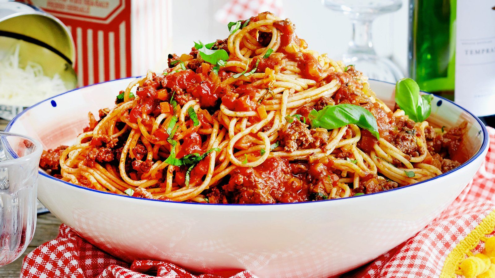

Spaghetti Recipe

Ingredients
For the Sauce:
- 2 tablespoons olive oil
- 1 medium onion, finely chopped
- 2-3 cloves garlic, minced
- 2 cans (28 ounces each) crushed tomatoes
- 2 tablespoons tomato paste
- 1 teaspoon sugar (optional, to balance acidity)
- 1 teaspoon salt
- 1/2 teaspoon ground black pepper
- 1 teaspoon dried oregano
- 1 teaspoon dried basil
- 1/4 teaspoon red pepper flakes (optional, for heat)
- A handful of fresh basil leaves, chopped (optional)
- Grated Parmesan cheese, for serving
For the Spaghetti:
- 1 pound (450 grams) spaghetti
- Salt for boiling water
Instructions
- Prepare the Sauce:
- Heat the olive oil in a large saucepan over medium heat.
- Add the chopped onion and cook until it becomes translucent, about 5 minutes.
- Add the minced garlic and cook for another minute until fragrant.
- Stir in the crushed tomatoes, tomato paste, sugar (if using), salt, black pepper, dried oregano, dried basil, and red pepper flakes (if using).
- Bring the sauce to a simmer and let it cook for about 20-30 minutes, stirring occasionally, until it thickens slightly.
- Stir in the fresh basil leaves (if using) and adjust the seasoning if needed.
- Cook the Spaghetti:
- Bring a large pot of salted water to a boil.
- Add the spaghetti and cook according to the package instructions until al dente (firm to the bite).
- Reserve about 1/2 cup of pasta water, then drain the spaghetti.
- Combine and Serve:
- Add the cooked spaghetti to the sauce and toss to coat well. If the sauce is too thick, add a bit of the reserved pasta water to achieve the desired consistency.
- Serve the spaghetti topped with grated Parmesan cheese and extra fresh basil, if desired.
Explanation of Spaghetti
What is Spaghetti?
Spaghetti is a type of pasta made from durum wheat and water, formed into long, thin, cylindrical strands. It is one of the most popular and versatile types of pasta, originating from Italy but now enjoyed worldwide. Spaghetti is typically cooked by boiling and is often served with a variety of sauces.
Types of Spaghetti Dishes
- Spaghetti with Marinara Sauce: A classic dish featuring a simple tomato-based sauce made with tomatoes, garlic, onions, and herbs.
- Spaghetti Bolognese: A hearty dish with a rich meat sauce made from ground beef, tomatoes, onions, garlic, and sometimes carrots and celery.
- Spaghetti Carbonara: A creamy pasta dish made with eggs, cheese (usually Pecorino Romano or Parmesan), pancetta or guanciale, and black pepper.
- Spaghetti Aglio e Olio: A simple and flavorful dish made with olive oil, garlic, red pepper flakes, and sometimes parsley.
Cooking Tips for Spaghetti
- Boiling Water: Always cook spaghetti in a large pot of boiling salted water. The salt adds flavor to the pasta, and the large volume of water helps prevent the strands from sticking together.
- Al Dente: Cook the spaghetti until it is al dente, meaning it is firm to the bite. Overcooked spaghetti can become mushy and lose its appealing texture.
- Sauce Integration: To ensure the best flavor, toss the cooked spaghetti with the sauce in a pan over low heat for a minute or two. This helps the pasta absorb the sauce and enhances the overall taste.
Nutritional Information
Spaghetti is a good source of carbohydrates, providing energy for the body. Whole wheat versions of spaghetti are also available, which offer more fiber and nutrients than the refined white pasta. Spaghetti can be part of a balanced diet, especially when paired with nutritious sauces and toppings like vegetables, lean meats, and healthy fats.
Spaghetti is not just a staple in Italian cuisine but a beloved dish around the globe, adaptable to various culinary styles and personal preferences. Whether enjoyed in a simple tomato sauce or a complex meat ragu, spaghetti offers a comforting and satisfying meal.
Index Page